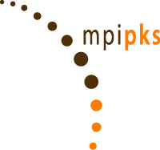
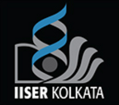

Appointments
Appointments Education
Education- Achievements
- Teaching
 Organization
Organization- Referee Service
Professional Appointments
-
Manager (Data Science), April 2022 - Present

Senior Consultant (Data Science), Jul 2019 - Mar 2022
Ernst & Young (EY), Germany
Academic Appointments
-
Postdoctoral Fellow, Jan 2018 - Apr 2019
The Motter Group
Department of Physics and Astronomy
Northwestern University (NU), USA -
Doctoral Researcher, Jul 2014 - Jan 2018
BMBF Young Investigators Group CoSy-CC2
Transdisciplinary Concepts & Methods - Research Domain 4
Potsdam Institute for Climate Impact Research (PIK), Germany
(Institute of the Leibniz Association) -
Visiting Researcher, Sep 2016 - Oct 2016 
International seminar & workshop on Multistability and Tipping:
From Mathematics and Physics to Climate and Brain
Max Planck Institute for the Physics of Complex Systems (MPIPKS), Germany
Education
-
Ph.D., Physics, Summa Cum Laude (Distinction), Oct 2014 - Apr 2018
Specialization: Theoretical Physics
Department of Physics, Humboldt University (HU) of Berlin, Germany -
B.S. - M.S. Dual Degree, Physical Sciences, Aug 2009 - Jun 2014 
Indian Institute of Science Education and Research (IISER) Kolkata, India
Click here to view the academic courses attended.
Click here to view the academic projects undertaken.
Fellowships
-
Insight Data Science Fellowship, May 2019 - Aug 2019
An intensive 7-week postdoctoral training fellowship bridging the gap between academia & data science. -
German Academic Exchange Service (DAAD) Scholarship, Sep 2017
DAAD is Germany's largest & one of its most decorated exchange scholarships. -
National Initiative in Undergraduate Sciences (NIUS) - Physics Fellowship, Jun 2010 - May 2012
NIUS - Physics is a national fellowship & a major initiative of Homi Bhabha Centre for Science Education - Tata Institute of Fundamental Research (HBCSE - TIFR), Mumbai, India for encouraging Indian students interested in undertaking challenging research projects in physical sciences. -
Kishore Vaigyanik Protsahan Yojana (KVPY) Fellowship, Aug 2009 - Jul 2014
KVPY is a national fellowship scheme organized by the Indian Institute of Science (IISc), Bangalore, India & funded by the Department of Science & Technology (DST), Government of India for encouraging Indian students studying basic sciences with an aptitude for research.
Awards
-
Awarded Postdoctoral Trainee Travel Grant by the Office of Postdoctoral Affairs, Northwestern University (NU), USA for participation at the SIAM Conference on Applications of Dynamical Systems (DS19) to be held during May 19 - 23, 2019 in Snowbird, Utah, USA.
-
Awarded certificate of outstanding contribution in reviewing (2017) for Physics Letters A.
-
Awarded travel grant by the DAAD Kongressreisenprogramm for participation at the Conference on Complex Systems (CCS) held during September 17 - 22, 2017 at Cancun International Convention Center, Cancún, Mexico.
-
Selected for the international seminar & workshop on Multistability and Tipping: From Mathematics and Physics to Climate and Brain held during September 19 - October 14, 2016 at the Max Planck Institute for the Physics of Complex Systems, Dresden, Germany.
-
Selected for the Summer Research Program on Dynamics of Complex Systems held during May 23 - July 23, 2016 at the International Centre for Theoretical Sciences (ICTS), Bengaluru, India.
-
Awarded travel grant by the Wilhelm und Else (WE) Heraeus Communication Programme for participation at the Deutsche Physikalische Gesellschaft (DPG) Spring Meeting held during March 6 - 11, 2016 at University of Regensburg, Regensburg, Germany.
-
Nominated by the Leibniz Association for the 66th Lindau Nobel Laureate Meeting on Physics held during June 26 - July 1, 2016 in Lindau, Germany.
-
Selected for the Spring College on the Physics of Complex Systems & the Hands-On Research in Complex Systems School held during May 21 - June 19, 2015 & June 28 - July 10, 2015 at The Abdus Salam International Centre for Theoretical Physics (ICTP), Trieste, Italy, respectively.
-
Selected for the Indian Institute of Technology (IIT) Jodhpur Undergraduate Research Initiative (UGRI) Program 2014.
-
Selected among the very few students at the master's level for participation in the DST - SERC School on Nonlinear Dynamics held during January 27 - February 18, 2014 at the Department of Physics, Panjab University, Chandigarh, India.
-
Selected for the IISER Pune Summer Student Programme 2012 & 2013.
-
Selected for the Winter School on Astroparticle Physics (WAPP) organized at the Cosmic Ray Laboratory of TIFR, Ooty, India in association with the Bose Institute, Kolkata, India held during December 20 - 28, 2012 in Ooty, India.
Teaching
-
Nonlinear Dynamics and Complex Networks in the Earth System
Summer Term 2016
Humboldt University (HU) of Berlin, Germany
Organization
-
2nd CVAS Workshop
October 25 - 27, 2017
Potsdam, Germany -
GOTHAM International Summer School
September 18 - 22, 2017
Potsdam, Germany